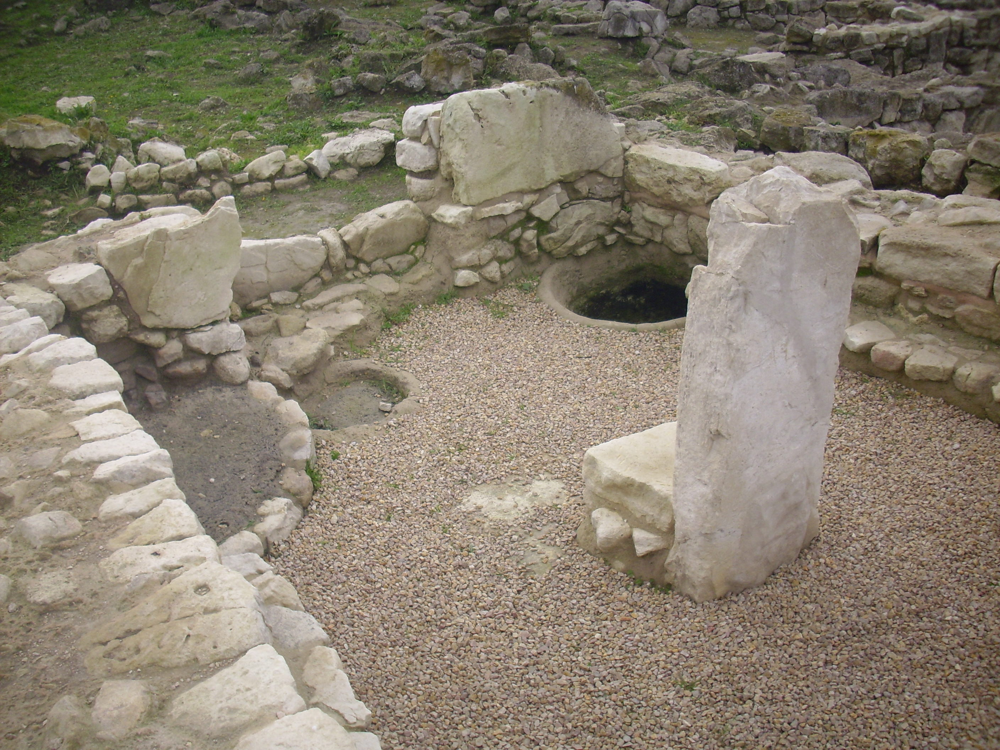
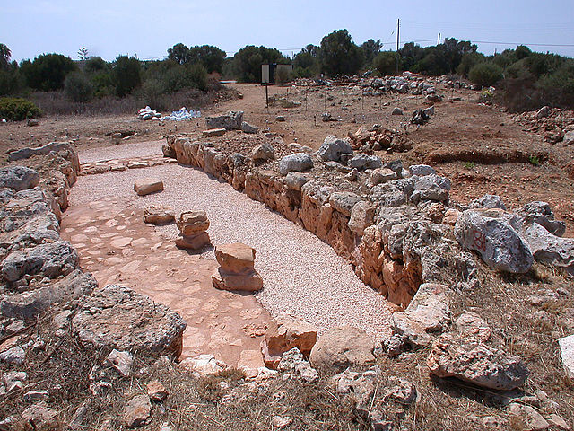
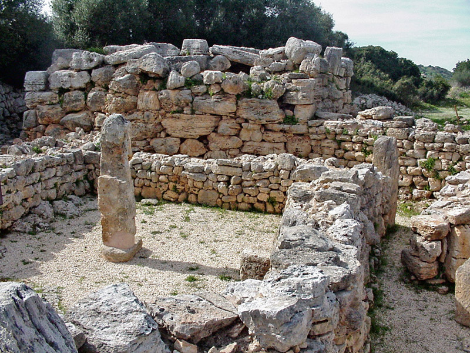
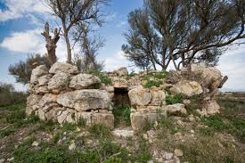
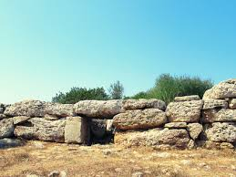
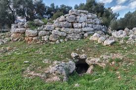
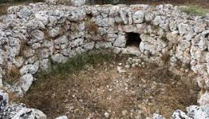

Explora las Necropolis más importantes de mallorca
Definición de necropolis:
Una necrópolis (del griego antiguo νεκρόπολις: nekrós "muerto" y pólis "ciudad", es decir, "ciudad de los muertos") es un gran cementerio o conjunto de tumbas organizadas, generalmente asociado con antiguas civilizaciones. Las necrópolis solían ubicarse fuera de las ciudades principales y eran espacios destinados al entierro y homenaje a los muertos.
Descubre necropolis:









Imponentes construcciones prehistóricas distribuidas por toda la isla.